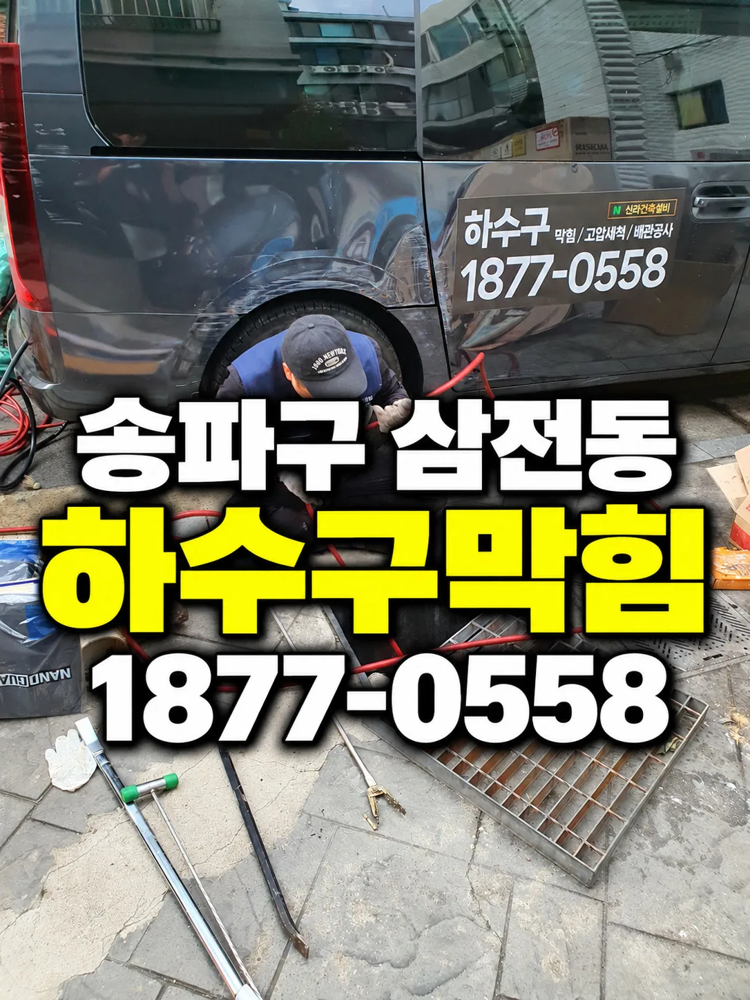
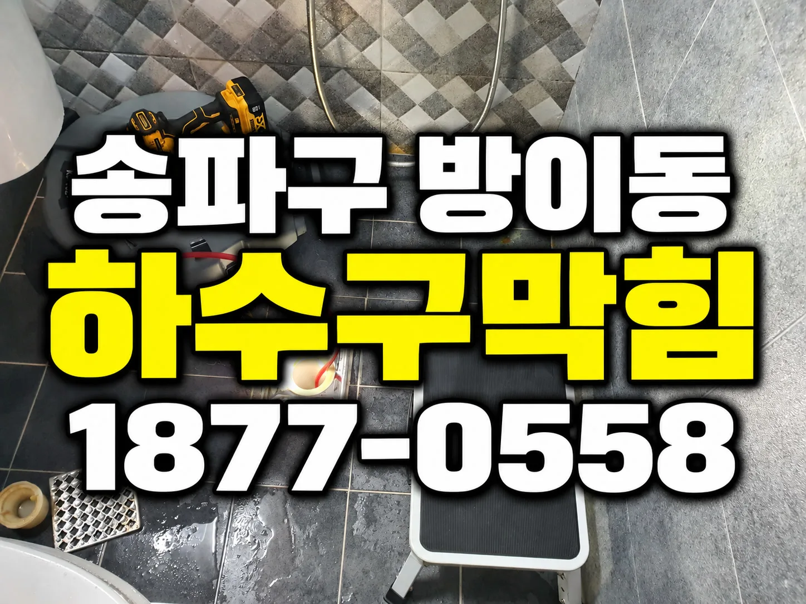
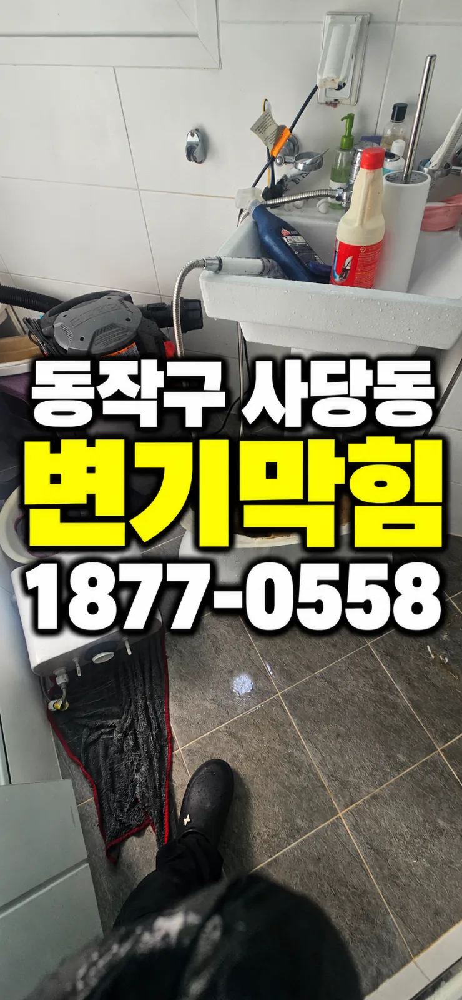
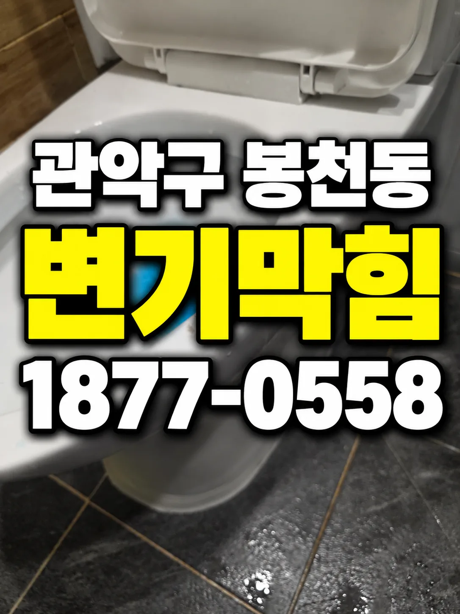
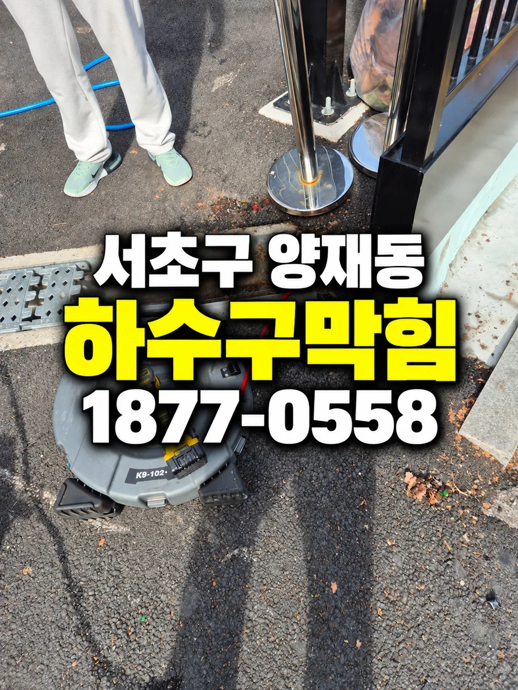
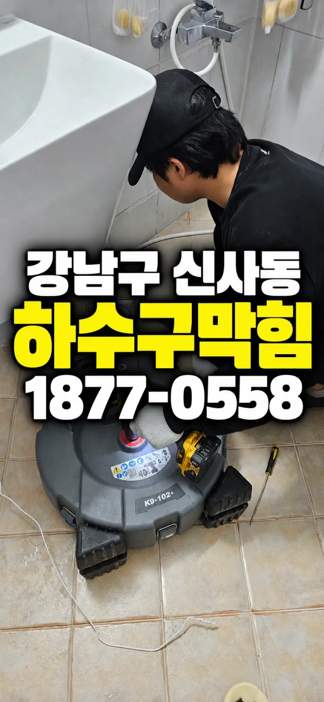

서초구 서초동 하수구막힘 | 커피숍 찌꺼기 제거 역구배 확인
서초구 서초동 하수구막힘 커피 찌꺼기와 기름 슬러지를 제거해 배수를 회복하고 물이 남는 역구배 구간과 별도 배관 보수 필요성을 확인한 서초동
서울특별시 FIELD NOTES
실제 출동 기록이 있는 지역을 중심으로 변기·싱크대·하수구·배관 작업 사례를 연결합니다.
서초구 서초동 하수구막힘 커피 찌꺼기와 기름 슬러지를 제거해 배수를 회복하고 물이 남는 역구배 구간과 별도 배관 보수 필요성을 확인한 서초동
동대문구 장안동 싱크대막힘 오피스텔 싱크대 배관의 기름때를 샤프트로 제거하고 통수테스트 후 주름관을 새것으로 교체했습니다

송파구 삼전동 하수구막힘 집수정을 열어 공용배관을 내시경으로 점검하고 출수구를 찾은 뒤 역방향으로 고압세척을 진행해 막힘을 해결했습니다

송파구 방이동 하수구막힘 화장실 바닥 배관의 머리카락과 비누 찌꺼기를 내시경으로 확인하고 샤프트 작업 후 재검사와 통수 확인을 마쳤습니다

동작구 사당동 변기막힘 변기 탈거 후 하부 배출구의 휴지와 음식물을 제거하고 에어건 작업과 백시멘트 마감 및 정상 통수 확인을 마쳤습니다

관악구 봉천동 변기막힘 변기 안에 끼인 유리 화장품 용기의 파손 우려를 고려해 처음부터 탈거하고 용기 위치와 변기 각도를 조정하며 에어건으로

서초구 양재동 하수구막힘 주차장 외부 트렌치와 건물 출수구 쪽 배관의 기름때 이물질을 샤프트로 처리해 통수를 회복하고 공용배관 추가 점검

강남구 신사동 하수구막힘 아파트 욕실 배수구의 냄새 차단 트랩이 배관 안쪽으로 빠져 발생한 막힘으로 석션으로 고인 물을 제거한 뒤 샤프트로
서대문구 북아현동 하수구막힘 욕실 바닥 유가에서 배관 내시경으로 구간을 확인한 뒤 샤프트를 긴 구간 반복 작업해 정상 통수를 확인한 사례입니다
송파구 잠실동 변기막힘 현장에서 석션으로 휴지죽을 다량 회수했지만 막힘이 남아 변기를 탈거한 뒤 에어건 작업으로 해결했습니다
구로구 가산동 변기막힘 꽉 막힌 변기를 탈거해 물티슈와 변이 섞인 이물질을 제거하고 석션과 에어건 작업 뒤 통수 확인 및 백시멘트 마감까지
송파구 가락동 변기막힘 소변기를 탈거해 배수구 주변의 요석을 제거하고 리지드 샤프트 작업 뒤 호스로 최종 통수를 확인했습니다